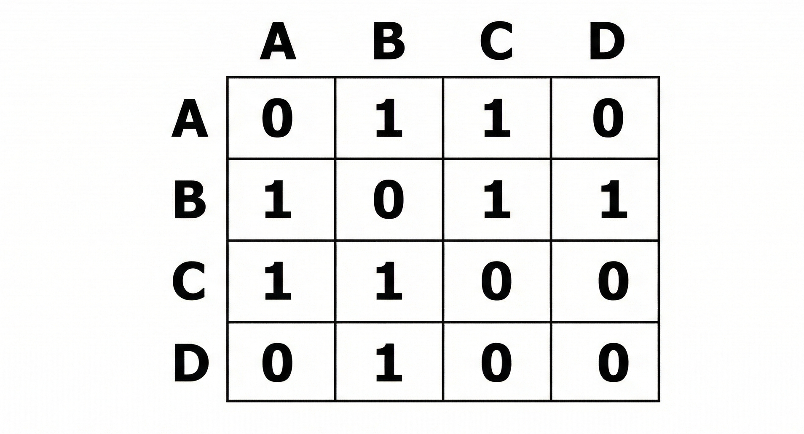
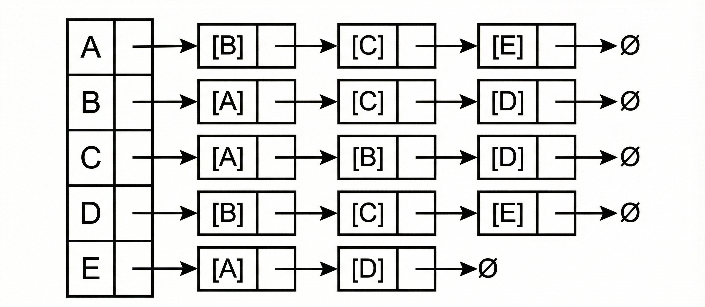

Estructuras de Datos II · Universidad INCCA de Colombia
Representación de grafos en memoria
Para trabajar con grafos en un programa necesitamos una forma concreta de
guardarlos en memoria. Las dos representaciones más utilizadas son:
Matriz de adyacencia
Lista de adyacencia
Ambas describen el mismo grafo, pero con estructuras y costos muy diferentes
en tiempo y espacio.
Matriz de adyacencia
Una matriz de adyacencia es una tabla cuadrada de tamaño n × n,
donde n es el número de vértices. Cada casilla
M[i][j] indica si existe una arista que conecta el vértice
i con el vértice j.
En un grafo no ponderado, normalmente se usa:
1 para indicar que la arista existe.
0 para indicar que no hay conexión.

Figura 2. Matriz de adyacencia del grafo simple mostrado en la introducción.
Ventajas:
Búsqueda muy rápida para saber si existe la arista (i, j).
Estructura simple y fácil de implementar.
Desventajas:
Siempre ocupa n² posiciones, haya pocas o muchas aristas.
No es eficiente cuando el grafo es grande y casi no tiene conexiones.
Lista de adyacencia
En la lista de adyacencia, cada vértice del grafo tiene asociada una colección
(lista, vector, etc.) con todos los vértices a los que está directamente
conectado.

Figura 3. Lista de adyacencia correspondiente al mismo grafo de ejemplo.
Ventajas:
Uso de memoria proporcional al número de aristas reales.
Recorrer los vecinos de un vértice es directo, ideal para algoritmos de
recorrido como
BFS
y
DFS.
Desventajas:
Consultar si existe una arista concreta (i, j) puede requerir buscar
dentro de la lista de vecinos.
La implementación suele requerir estructuras dinámicas (listas enlazadas,
vectores de vectores, etc.).
¿Cuál representación elegir?
No hay una única respuesta correcta: depende del problema que estés resolviendo.
Si el grafo es denso (muchas aristas) y usas muchas consultas directas
“¿existe la arista (i, j)?”, la matriz de adyacencia es
una buena opción.
Si el grafo es grande y disperso, y vas a ejecutar recorridos como
BFS
o
DFS,
la lista de adyacencia suele ser más eficiente.